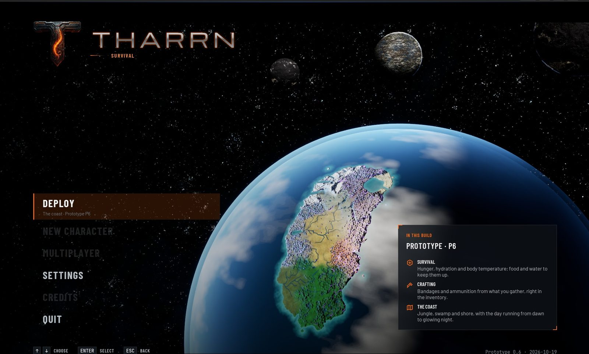
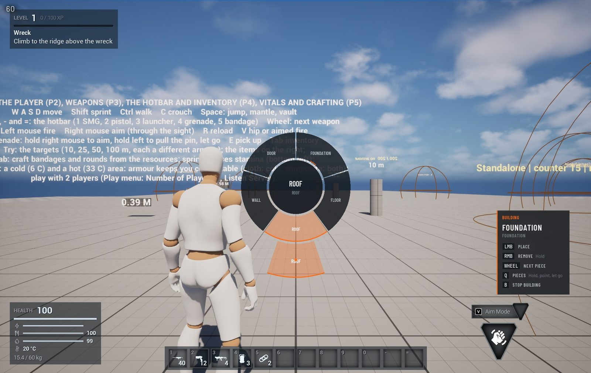
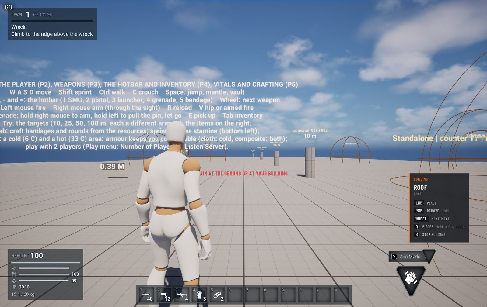
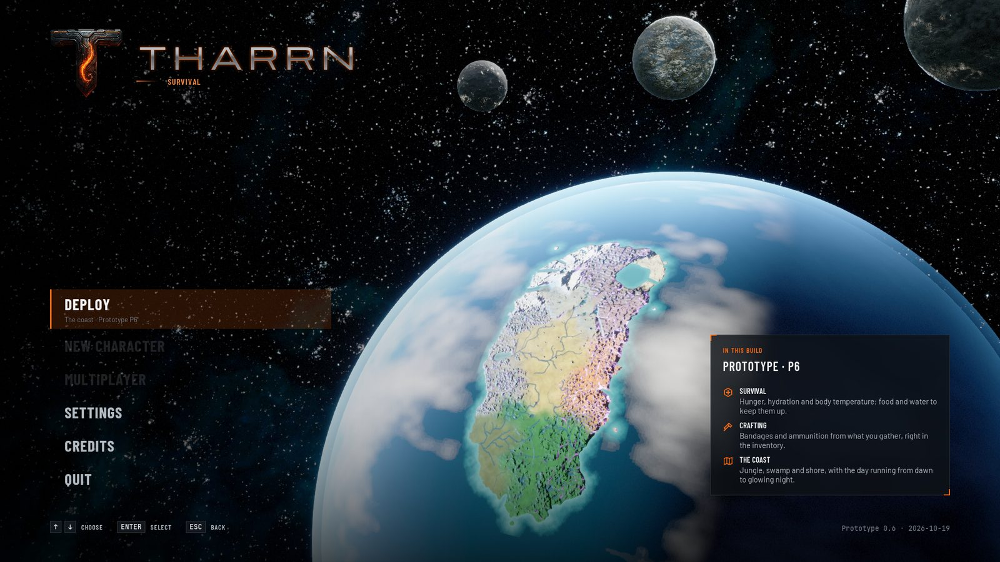
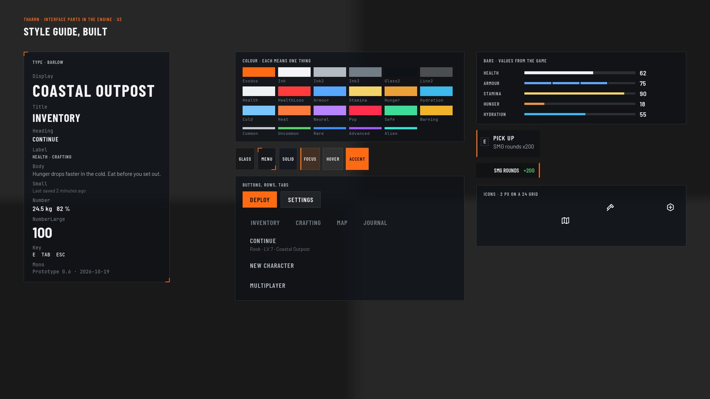
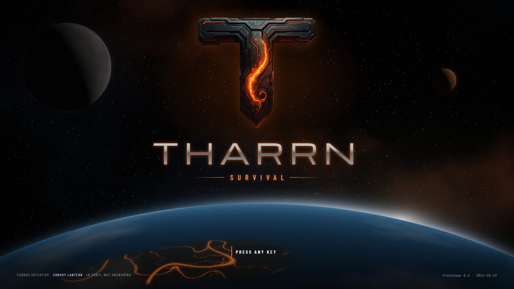

GUI, UI, Menus
Designing and building Tharrn's interface to AAA quality: the HUD, the menus, the survival screens, the loading screen.
Doing This tab is the interface's workshop: the HUD, the menus, the survival screens and the loading screen, designed and built to AAA quality, with pictures as each step lands. The direction is the owner's (D-31): The Division 2's menus and HUD, with ARK's layout for the survival parts, approved as drafted (D-36), with the owner's T emblem as the logo. Mock-ups are drawn over real captures from the game, with the game's real items and values; the parts are now built in the engine (step U3).
Next, and what the owner decides
Next The main menu, in the engine (U4): it plays in the game over its live scene (the pictures above). Tested with the mouse (2026-10-20): Settings opens Easy Game UI's options and Back returns; Quit leaves. Deploy is now wired exactly like Easy Game UI's own New Game; the test clicks never reached it because a floating Message Log window lay over it, so the owner's click is its first real test (close that window first). Since the owner's test (2026-10-20) the game shows this menu: Play in L_TharrnMainMenu (to go back to Easy Game UI's: /Game/Tharrn/UI/DA_TharrnUIConfig, Main Menu Widget = WBP_EasyMainMenu). For the owner, later ("i looked at a few things, ill decide later"): is the main menu right (OQ-31)? Does the planet read as Tharrn, and the moons? Are the entries right (Deploy, New character, Multiplayer, Settings, Credits, Quit)? The title screen next, the T emblem large over the planet? Built 2026-10-21: one lit entry at a time (the pointer moves the focus, so Deploy no longer stays lit beside another). The build tool's HUD (D-44, U5): in the game since 2026-10-21 (the pictures above), checked in a play session: hold Q for a radial piece menu (categories inside, their pieces outside, point with the mouse, let go to choose), the piece in hand and the build keys bottom right, why a piece cannot go under the crosshair, the new piece's name when the wheel changes it, and E at a door. Next: Easy Game UI's "press any key" stage restyled as the title screen (the owner's emblem), then the loading screen. Nothing is committed until the owner calls the main menu right.
Open question The questions this chat waits on. Each carries a recommendation; "as proposed" is an answer.
| ID | The question | Recommendation |
|---|---|---|
OQ-31 | The title screen and the main menu (D-36): the scene behind them, and when commits close the main menu's draft | Proposal (the Interface chat, 2026-10-19): the owner's T emblem and wordmark over Tharrn from orbit, built in the engine: the planet painted from the main map itself (L_Main's regions, heights, rivers and lakes, the Lattice glowing Neural on the night side) with the Sci-Fi bundle's planet material, and the bundle's own moon and two planets in its sky (BP_SpaceMoonA, BP_SpacePlanetA and B), as the game's sky shows them; a title screen (press any key) before the menu. The work is saved locally and committed once the owner calls the main menu right (owner: "save locally untill we have main menu dialed in") |
Decided for this tab
| ID | Decision | Date |
|---|---|---|
D-21 | Menus and the HUD are built with Easy Game UI Ultimate 3.0 | 2026-10-16 |
D-31 | The interface follows The Division 2's menus and HUD, with ARK's layout for the survival parts. | 2026-10-19 |
D-36 | The interface's look is approved as drafted (D-31's style guide); Easy Game UI stays underneath, restyled; the owner's T emblem is the game's logo. | 2026-10-19 |
D-42 | Tharrn is a PC game played mainly with keyboard and mouse; a game controller is an extra. | 2026-10-20 |
D-44 | The build tool's pieces are chosen from a radial menu (the UI chat's), and MST Pro's building functions and menus may be brought in where they fit. | 2026-10-21 |
Latest pictures














Steps
| Step | What | State |
|---|---|---|
| U1 | Style guide: colour, type, panels, buttons, rows, item slots, bars, icons, HUD layout, motion, sound | In the build approved 2026-10-19 (D-36) |
| U2 | Mock-ups of the main screens over in-game captures: HUD, inventory, main menu, loading screen; the title screen | Doing draft 1 approved; the title screen and main menu redone from the owner's concept (draft 2) |
| U3 | Shared parts in the engine: the tokens as UMG styles, Barlow imported, the icon set, buttons, rows, slots, bars, prompts and toasts as C++ widget classes with Blueprint looks | Doing built 2026-10-19 (the style asset, fonts, 38 icons, text, panel, bar, button, key prompt and toast; Easy Game UI restyled); item slots next |
| U4 | Main menu (with a live 3D scene behind) and loading screen | Doing the main menu drawn by the engine over its live scene (2026-10-20): Tharrn's own planet material and sphere, the island from the main map, the bundle's moon and planets; the scene sits in the menu level; its actions wired the way Easy Game UI's own menu does them (it is one of Easy Game UI's screens now, on WBP_EasyMasterWidget: Deploy loads the new-game level through Easy Game UI's loader, Settings opens its options, Quit leaves; focus on Deploy for keyboard and gamepad); played in the game 2026-10-20 (it shows over the live scene after Easy Game UI's "press any key" stage, which becomes the title screen); mouse test 2026-10-20: Settings opens the options and Back returns, Quit leaves, Deploy now passes exactly what Easy Game UI's own New Game passes (no save slot, the new-game level's name; the first version put the name in the slot field), and the row and tab buttons stay clickable while selected (CommonUI blocks that otherwise); the scripted clicks on Deploy were taken by a floating Message Log window over the viewport (engineering guide, gotcha 128), so the owner's own click is its first real test; since the owner's test (2026-10-20) the game shows it (Easy Game UI's MainMenuWidget in DA_TharrnUIConfig; the owner: "i looked at a few things, ill decide later"), and OQ-31 is still open; one lit entry at a time (the pointer moves the focus: UTharrnButton::bLightFollowsFocus, built 2026-10-21; Deploy lit when it opens); a title screen next; saved locally until the owner calls the main menu right |
| U5 | HUD rebuilt in the new style; with it the build menu and build hints, on the Building chat's B4 build mode (split agreed 2026-10-20) | Doing the build tool's HUD first (D-44, the owner 2026-10-21: "get UI chat to make a Radial menu instead"), in the game 2026-10-21 (built, test Tharrn.UI.RadialPointing passed, checked in a play session by Tools/UI/check_build_hud.py: the radial opened, pointing chose a piece, letting go made it the piece in hand): hold Q for a radial piece menu (categories on an inner ring, their pieces on an outer ring, point with the mouse, let go to choose; MST Pro's radial as the reference, not its widgets: D-08), the piece in hand and the build keys bottom right, why a piece cannot go under the crosshair, holding remove's progress, the new piece's name flashed when the wheel changes it, and the door's E prompt in the pick-up prompt's place (C++ UTharrnRadialMenu, UTharrnBuildHud; Tools/UI/build_build_hud.py; test Tharrn.UI.RadialPointing); the rest of the HUD later |
| U6 | Inventory and crafting in ARK's layout | Designed |
| U7 | Pause menu, options (Easy Game UI, D-21), death and respawn, starting-location picker (D-28) | Designed |
| U8 | Map, journal, character creation | Designed |
Direction
- The Division 2's menus and HUD:** calm dark glass over the world, one signal colour, condensed capitals, numbers you read at a glance; the HUD in the corners, tilted a little as if it floats beside the player, fading when it has nothing to say; full-screen menus with tabs across the top (Q and E) and a card for the selected thing.
- ARK's layout for the survival parts:** the inventory with the backpack left, the character and what is worn in the middle with the survival stats, the other side (an item, a container, a crafting station) right; hunger, hydration and temperature beside health with their values.
- Honest data:** every number comes from the game's real state and data; a feature not built yet is labelled, not drawn as if it were.
- Keyboard and mouse first (D-42; the owner, 2026-10-20: "Its a pc game so using a keyboard mainly, game controller is an extra"):** every screen, prompt and control is designed and tested with keyboard and mouse; the gamepad gets working equivalents (Common UI's navigation, its buttons on the prompts while one is in use) but never shapes a layout.
- e style is Tharrn's own (Exodus orange, Barlow type, its own icons), not copied art; Barlow is under the SIL Open Font License, so it can ship with the game.
- Approved (D-36, 2026-10-19):** the style guide as drafted; the HUD's corners lean a little; Easy Game UI stays underneath (options, saves, input prompts, pause and menus) and is restyled in this look, while Tharrn's own C++ HUD and inventory stay.
- The main menu's scene (the owner, 2026-10-19: "The planet should look or resemble our game assets/map, the moons should look like the asset moon we have"):** Tharrn's planet is painted from the main map itself (
Tools/UI/make_planet_textures.pyin the game repo reads the Map chat's terrain data: the ten regions in their colours from orbit, shaded by the real heights, the rivers and lakes, the shallow coast; the Lattice in the mask's red, strongest under the desert and the plateau) for Tharrn's own planet material (M_TharrnPlanet: the map lit by a sun direction, drifting clouds, the Lattice glowing on the night side, the atmosphere's rim, on a smooth sphere of its own; the bundle's planet material samples virtual textures, which a scene capture leaves blurred, and its mesh shows corners this big), and the sky holds the bundle's moon and two planets as the game's sky does (BP_SpaceMoonA,BP_SpacePlanetA,BP_SpacePlanetB), all in one actor,BP_TharrnMenuScene. The menu itself isWBP_TharrnMainMenu, built from the shared parts byTools/UI/build_main_menu.py; its entries are honest to the build (no saves yet, so Deploy starts the game; character creation and a server list show disabled). - The logo is the owner's T emblem** (concept 2026-10-19,
docs/ui/Title_MainMenu_Concept.png): carved rock with a glowing crack, over a wide metal wordmark and SURVIVAL. Rebuilt for Tharrn (draft 2, a proposal): the T cut out as it is (docs/ui/art/tharrn-emblem.png,art/cut_emblem.py); the wordmark redrawn crisp; behind it Tharrn from orbit, the carrier Lantern's view (story.md): the ocean world's night side, the great island's rock glowing along the same kind of crack as the T (the Lattice and its signal), the two planets in its sky. In the game that scene is live (SkyAtmosphere from orbit), the crack pulses with the signal and the camera drifts; the mock-ups' backdrops are drawn byart/render_orbit.pyas stand-ins. Sources:docs/ui/holds the style guide's tokens and parts (tokens.css,icons.js), the mock-ups (*.html, drawn over in-game captures indocs/ui/backdrops/) andrender.mjs, which turns them into pictures inpictures/ui/(node projects/Tharrn/docs/ui/render.mjs).
In the game today
In the build What the build has now, before the new style: Tharrn's C++ widgets for the HUD (health, survival meters, the twelve-slot hotbar, the weapon, prompts), the inventory screen with crafting, and the death screen (P4, P5); the main menu, pause menu and options from Easy Game UI Ultimate (D-21). Each is rebuilt in the new style (steps U3 to U7).


HUD icons (P4 set)
Designed The placeholder icons the build uses now, white on a clear background so the HUD can tint them, shown here on a dark tile. The style guide redraws them crisper (square ends, sharp corners). Select one to see it full size; the PNG link under each is the transparent file the game uses.


Screens to come
- Map: layers for PvP zones, resource nodes and dungeon entrances; several zoom levels.
- Journal: objectives, stages, lore entries and map markers.
- Starting location: pick where to start, one or two places in each region by difficulty (D-28).
- Accessibility: UI scale, colour-blind modes, subtitle sizes, controller remapping; offered at first launch.
Characters
Designed Every face is a MetaHuman; character creation is a screen of its own (step U8).
PresetFaceBodyImplants and scarsVoiceOriginLoadoutConfirm
| Step | Choices |
|---|---|
| Preset | 12 curated MetaHumans with a balanced range of looks |
| Face | Sliders for jaw, brow, nose, cheeks and lips; iris colour, sclera tint, small scars; live preview with breathing and eye movement |
| Body | Height within ±15 %, musculature, limb length, posture |
| Implants and scars | Alien biotech: glowing nodes, plates under the skin; tattoos |
| Voice | 8 voice packs with lip sync; pitch |
| Origin | Scientist, Soldier, Scavenger or Corporate Envoy: a starting talent point, a starter item and a three-step intro quest |
| Loadout | A weapon type and a survival tool |
Open question The direction asks for 120 face sliders while you play. MetaHuman creation is an editor tool, so the prototype starts with the presets plus body, materials, tattoos and implants; changing faces in the game is its own research step (OQ-03).
The first preset
| Name | Ari Voss |
| Origin | Soldier |
| Height | 1.82 m |
| Implant | imp_neural_node_01, colour #00FFCC, glow 0.6 |
| Starter weapon | AR01 |
| Starter tool | field_scanner |
| Notes | Balanced soldier preset with slight jaw and high cheekbones. |